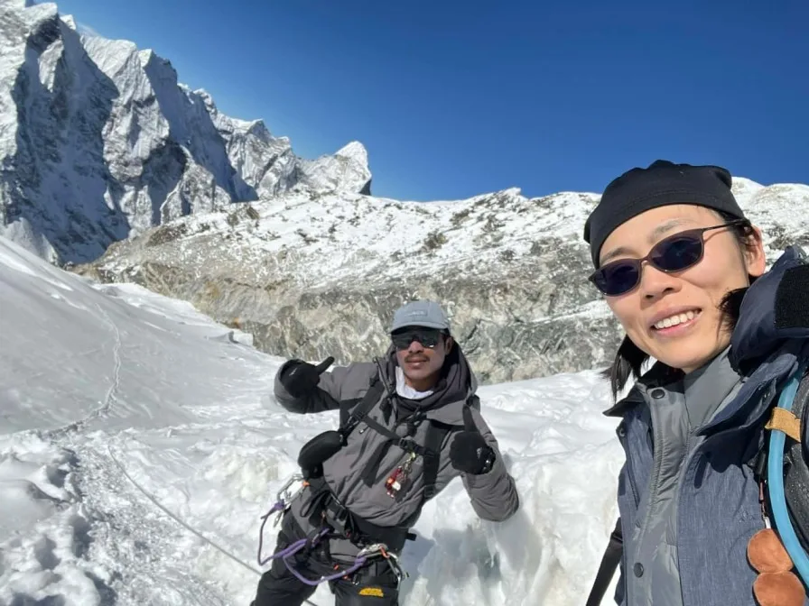

The alpine start at 2 a.m. from base camp was cold, but clipping into the fixed ropes on the headwall and reaching the summit ridge as the sun hit Lhotse was an experience of a lifetime. The guides and climbing gear provided by Igloo Himalaya Treks were flawless.
Everest Region • Peak Climbing Expedition
5.0
reviews on TripAdvisor
5.0
169 reviews on Google
Island Peak Climbing — 16 Days
Approach Island Peak through the villages and valleys of Nepal’s Khumbu region on our 16-day climbing trip. You walk through Namche Bazaar, Tengboche and Dingboche to Chhukung, with acclimatisation days in Namche and Chhukung before camping below the mountain.

Travelers' Choice
Best of the Best 2026


Key Trip Facts
DURATION
16 Days
16 days, including 12 days on the mountain route and a Kathmandu preparation day
DIFFICULTY
Challenging
Challenging; high-altitude trekking and technical snow, ice and rope climbing
MAXIMUM ALTITUDE
6,189 m / 20,305 ft
Approximately 6,189 m at the Island Peak summit
DESTINATION
Nepal
Khumbu, Sagarmatha National Park, Nepal
ACTIVITY
Peak climbing
High-altitude mountaineering & fixed rope climbing
ACCOMMODATION
Hotel, Lodges & Tents
3 Kathmandu hotel nights, 11 teahouse nights and 1 tented base-camp night
TRANSPORT
Lukla Flights & Transfers
Return Lukla flights, private airport transfers and Kathmandu–Ramechhap transport when required
MEALS
All Meals on Trek & Climb
Breakfast in Kathmandu; full board during trekking and climbing; trekking tea or coffee; farewell dinner
RECOMMENDED SEASON
Spring & Autumn
Spring (March–May) and autumn (September–November), subject to climbing conditions
TREK STARTS
Lukla (2,860 m)
Scenic flight landing at Tenzing-Hillary Airport, Lukla
TREK ENDS
Lukla (2,860 m)
Return flight to Kathmandu or Manthali from Lukla
TREK REGION
Everest / Khumbu
Imja Valley & Island Peak, Sagarmatha
PACKAGE START POINT
Kathmandu
Tribhuvan International Airport (KTM) arrival pickup
PACKAGE END POINT
Kathmandu
Tribhuvan International Airport (KTM) drop-off
Island Peak Climbing Overview
Our 16-day Island Peak Climbing trip follows the Khumbu approach through Namche Bazaar, Tengboche and Dingboche to Chhukung. From here, you continue to Island Peak Base Camp before attempting the summit at approximately 6,189 m. The journey combines village trekking, acclimatisation hikes and a guided climb using mountaineering equipment on snow, ice and fixed ropes.
After flying to Lukla, you follow the Dudh Koshi valley through Phakding, crossing suspension bridges before climbing to Namche Bazaar. Beyond Namche, the trail follows the hillside, descends to the river and climbs again to Tengboche. Its Buddhist monastery and views of Ama Dablam make this a memorable stop. Along the route, you pass Sherpa villages where monasteries, prayer wheels and mani walls reflect the community’s Buddhist traditions.
Beyond Dingboche, the route follows the Imja Valley to Chhukung, where an additional night allows acclimatisation and climbing preparation. Continue to base camp for a tented overnight stay and equipment practice. The summit attempt begins in darkness, with a return through base camp to Chhukung. Your descent then follows Tengboche, Namche Bazaar and Lukla again.
Climbing Island Peak requires strong fitness, endurance and the ability to use climbing equipment under your guide’s direction. The summit day involves glacier travel, steep snow or ice and a long descent. Basic training forms part of the programme, while previous mountain experience and preparation remain valuable. Your guide reviews conditions and your progress before deciding whether to continue higher.
You stay in teahouses, a base-camp tent and a Kathmandu hotel. The programme includes climbing preparation in Kathmandu before flying to Lukla and beginning the twelve-day mountain route.
Island Peak Climbing Trip Highlights
Why Book the Island Peak Climbing Trip with Igloo Himalaya Treks?
We help you prepare in Kathmandu and support your approach and climb. This package includes these trekking and climbing arrangements.
Climb Briefing and Gear Check
Before leaving Kathmandu, we review the programme and your equipment arrangements, including the personal kit needed for climbing. You can discuss preparation, accommodation, summit conditions and questions with us.
Guide and Porter Support
Your package includes a licensed, English-speaking trekking guide, a climbing guide for the summit attempt and one porter for two trekkers. They assist with preparation, route decisions and carrying your luggage.
Equipment for Trekking and Climbing
We provide a sleeping bag, down jacket and duffel bag, returned after the trip. Shared climbing equipment includes group ropes; personal boots and climbing hardware need separate arrangements in your quotation.
Communication When Plans Change
Weather can affect Lukla flights and summit conditions. Our team provides 24-hour assistance, explains available options and discusses changes with you, including any additional accommodation, climbing days or transport costs when necessary.
Day 1: Arrival in Kathmandu
Arrival & Welcome — Overnight in Kathmandu (1,400 m) — Hotel Check-in & Briefing
Welcome to Nepal. Our representative meets you at Tribhuvan International Airport and accompanies you to your hotel. After you settle in, we go through the climbing programme, check your essential equipment and discuss any questions you have.
Depending on your arrival time, you can explore the nearby streets of Thamel or rest after your flight. We also help with any final preparations before you leave for the Everest region.
Day 2: Trek Preparation in Kathmandu
Climbing Preparation — Overnight in Kathmandu (1,400 m) — Gear Inspection & Briefing
Today we review the climbing programme, check your personal equipment and complete the preparations for tomorrow’s flight. Discuss your mountain experience, personal climbing kit and any remaining questions with our team before leaving Kathmandu.
Use the remaining time to organise your luggage and arrange any personal equipment still needed. Check boot fit, warm layers and essential documents, then confirm your flight arrangements with us. Flights may operate from Kathmandu or require a road transfer to Ramechhap.
Day 3: Fly to Lukla and Trek to Phakding
Lukla Flight & Trailhead — Overnight in Phakding (2,610 m) — 3–4 hrs Walk along Dudh Koshi
Your mountain journey begins with a flight to Lukla at 2,860 m. Depending on airline operations and the season, the flight may depart from Kathmandu or Manthali Airport in Ramechhap.
After landing, you meet your trekking team and begin walking towards Phakding. The trail passes village homes, prayer wheels and forested slopes, with downhill stretches and shorter climbs along the way. Sections follow the Dudh Koshi River, introducing you to the valley you will explore over the coming days. We spend the night in Phakding.
Day 4: Trek from Phakding to Namche Bazaar
Sagarmatha Entry — Overnight in Namche Bazaar (3,440 m) — 5–6 hrs Walk & Hillary Suspension Bridge
We follow the Dudh Koshi through villages and pine forests, passing Benkar and Monjo before entering Sagarmatha National Park. Your guide handles the permit checks along the route.
Suspension bridges connect the valley trails, followed by a sustained uphill walk towards Namche. This final climb is the most demanding part of the day, so we allow time for breaks. Namche’s shops, lodges and houses spread across the hillside, making it an important trading town and a useful place to spend the next two nights.
Day 5: Acclimatisation Day in Namche Bazaar
Acclimatisation Day — Overnight in Namche Bazaar (3,440 m) — 3–4 hrs Hike to Hotel Everest View (3,880 m)
We stay another night in Namche and take a shorter hike above the town. A usual option is the trail towards Hotel Everest View, where clear weather offers views of Everest and nearby peaks.
Your guide chooses the walk according to conditions and how the group is feeling. Afterwards, we return to Namche for the night. The afternoon gives you time to rest, visit the shops or stop at a café before continuing towards Tengboche tomorrow.
Day 6: Trek from Namche Bazaar to Tengboche
Sacred Monastery Trail — Overnight in Tengboche (3,860 m) — 5–6 hrs Walk beneath Ama Dablam
Leaving Namche, we follow the hillside trail before descending towards Phunki Tenga. Mountain views accompany sections of the walk, while the river marks the low point before the climb to Tengboche.
The uphill trail passes through pine and rhododendron forest. Once we reach the village, you can settle into the teahouse and explore the surroundings. Tengboche’s Buddhist monastery stands against the mountain backdrop of Ama Dablam. If it is open to visitors, your guide explains the visiting customs before you enter.
Day 7: Trek from Tengboche to Dingboche
Imja Valley Ascent — Overnight in Dingboche (4,410 m) — 5–6 hrs Alpine Valley Walk
We descend through forest towards Debuche, cross the Imja Khola and continue through Pangboche. As the route gains height, the trees become fewer and the valley opens into slopes with low vegetation and stone buildings.
The trail passes Somare before reaching Dingboche in the Imja Valley. Today brings a noticeable gain in sleeping altitude, so we keep a steady pace throughout the walk. After checking into your teahouse, the afternoon is available for rest before tomorrow’s walk towards Chhukung.
Day 8: Trek from Dingboche to Chhukung
Upper Imja Valley — Overnight in Chhukung (4,730 m) — 2–3 hrs Walk towards Lhotse & Island Peak
From Dingboche, follow the upper Imja Valley towards Chhukung. The route is shorter than recent stages, but you continue gaining height, crossing open ground with views towards Lhotse and Island Peak when the weather allows.
Rocky paths and grazing slopes lead towards the village, where we settle into a teahouse for two nights. The afternoon allows time to rest and organise your belongings. Tomorrow combines an acclimatisation hike with climbing preparation before the approach to Island Peak Base Camp.
Day 9: Acclimatisation and Climbing Preparation in Chhukung
Gear Clinic & Acclimatisation — Overnight in Chhukung (4,730 m) — 2–3 hrs Hike & Rope Practice
We spend another night in Chhukung and take a shorter hike above the village. Your guide chooses the route and turnaround point according to conditions, your progress and how you feel at this higher elevation.
The day also includes climbing preparation. Discuss crampons, harness fitting, ice axe use and the rope systems required for the attempt with your climbing guide. Check your equipment and organise warm layers before returning to the teahouse for another night.
Day 10: Trek to Island Peak Base Camp
Island Peak Base Camp — Tented Camp at Base Camp (5,100 m) — 3–5 hrs Moraine Walk & Pre-Climb Briefing
Leaving Chhukung, follow rocky trails towards Island Peak Base Camp. The approach crosses moraine and open ground below the mountain, with the altitude adding effort to this shorter stage. We reach camp and settle into the tented accommodation.
Your climbing guide leads equipment checks and practical preparation, including the use of crampons, an ice axe and rope systems. After an early meal, organise your climbing kit and rest. The summit attempt begins during the night or early morning.
Day 11: Attempt Island Peak Summit and Return to Chhukung
SUMMIT DAY: Island Peak (6,189 m) — Overnight in Chhukung (4,730 m) — 12–16 hrs Alpine Summit Push
We start during the night, following the climbing guide over rocky ground towards the glacier. Headlamps, warm clothing and correctly fitted equipment are essential for this long, demanding day.
The route involves crampons and rope systems on steep snow or ice. Your guide assesses conditions and progress throughout the attempt. If reached in clear weather, the summit offers views towards Lhotse, Nuptse and Ama Dablam.
Descend to base camp, then continue towards Chhukung for the night. The return is part of the climbing day; pace and turnaround decisions account for the descent.
Day 12: Trek from Chhukung to Tengboche
Descent through Imja Valley — Overnight in Tengboche (3,860 m) — Full Day Walk via Pangboche & Debuche
We leave Chhukung and follow the Imja Valley back through Dingboche. The trail continues towards Pangboche, returning to lower slopes and village paths. After yesterday’s long summit attempt, keep a measured pace and allow time for breaks during the descent.
Beyond Pangboche, continue towards Debuche and Tengboche. Forests reappear as the route loses height, with another uphill section before reaching the village. Your overnight stop is Tengboche, where you can rest at the teahouse and organise your belongings before tomorrow’s walk towards Namche Bazaar.
Day 13: Trek from Tengboche to Namche Bazaar
Dudh Koshi Valley — Overnight in Namche Bazaar (3,440 m) — 4–6 hrs Walk via Phunki Tenga
From Tengboche, descend through the forest towards Phunki Tenga. After crossing the river, the route climbs again before following the hillside towards Namche Bazaar, with breaks along the way.
The return combines downhill sections with a sustained climb from the river, so it still requires effort. As we reach Namche, the shops, lodges and cafés come into view. Check into your teahouse and rest before tomorrow’s final walking stage along the Dudh Koshi valley towards Lukla and the airport.
Day 14: Trek from Namche Bazaar to Lukla
Final Walking Stage — Overnight in Lukla (2,860 m) — 6–7 hrs Valley Walk & Celebration
Our final trekking day follows the route down from Namche through Jorsalle, Monjo and Phakding. You cross familiar suspension bridges and return through the forested sections of the Dudh Koshi valley.
The approach to Lukla includes uphill stretches, so there is still some effort ahead after the main descent. On arrival, we check into the teahouse for the last night in the mountains. The evening gives you time to organise your belongings and spend time with your guide and porter team.
Day 15: Fly from Lukla and Return to Kathmandu
Lukla Return Flight — Overnight in Kathmandu (1,400 m) — Morning Mountain Flight & Farewell Dinner
We prepare for the return flight from Lukla. Depending on the operating schedule, you may fly directly to Kathmandu or land at Manthali Airport and continue by road.
After reaching your hotel, the remaining time is free for rest, shopping or exploring nearby areas. We share a farewell dinner in Kathmandu, bringing the climbing programme to a close. Flight timing remains dependent on weather and airline operations.
Day 16: Departure from Kathmandu
Homeward Journey — Kathmandu (1,400 m) — Airport Transfer & Departure
Your 16-day Island Peak Climbing trip ends today. After breakfast, prepare for your onward journey. Depending on your flight time, you may have an opportunity for a final walk nearby before leaving your Kathmandu hotel.
Our representative accompanies you to Tribhuvan International Airport for your departure.
What’s Included in the Island Peak Climbing Trip
Airport transfers
Pickup and drop-off for your arrival and departure in Kathmandu.
Return Lukla flights
Domestic flights with airport taxes, plus Kathmandu–Ramechhap road transport when flights operate through Manthali Airport instead.
Accommodation
Three nights in a three-star Kathmandu hotel, eleven nights in twin-sharing teahouses and one tented night at Island Peak Base Camp, with camping facilities provided.
Meals
Hotel breakfast in Kathmandu; breakfast, lunch and dinner during trekking and climbing; tea or coffee during trekking days; a farewell dinner in Kathmandu after returning from the mountain route.
Guide and porter
A licensed, English-speaking trekking guide and one porter for every two trekkers.
Included permits
Island Peak climbing permit, Sagarmatha National Park permit and Khumbu Pasang Lhamu Rural Municipality entry fee.
Equipment
Sleeping bag, down jacket and duffel, all returned after the trip; group ropes and shared technical climbing equipment are included.
Climbing support
Climbing guide, basic training and briefing before the summit attempt.
Medical equipment
First-aid kit and pulse oximeter carried by the team.
Staff and trip costs
Staff expenses, insurance, taxes, service charges and applicable completion certificate.
What’s Not Included in the Island Peak Climbing Trip
International flights and Nepal visa
Airfare to and from Nepal and your visa fee.
Mountaineering insurance
Your policy covering high-altitude climbing, medical treatment and emergency helicopter rescue and evacuation costs.
Emergency evacuation
Helicopter rescue, evacuation and treatment costs, separate from the services in your climbing package.
Personal climbing equipment
Boots, crampons, harness, helmet, ice axe, ascender, carabiners and other items unless your quotation includes them.
Extra food and drinks
Bottled water, soft drinks, alcohol, personal snacks and energy bars beyond the meals and refreshments included.
Other Kathmandu meals
Lunches and dinners apart from the farewell dinner in our programme.
Teahouse services
Hot showers, laundry, Wi-Fi and device charging.
Gratuities
Tips for trekking guides, climbing guides and porters.
Additional accommodation or transport
Extra costs may apply when delays, itinerary changes or personal extensions require services outside the programme.
Island Peak Climbing Trip Dates & Availability
Group Departures
If you would like to climb with other travellers, ask us about upcoming group departures. We’ll confirm the available dates, spaces and price for your chosen departure.
Private Climb Dates
Prefer to travel with your own group? Send us your preferred arrival date and number of travellers. We’ll check the arrangements for a private climb.
Starting Prices
Prices are in US dollars and represent starting rates. Contact us with your travel dates and group size to confirm availability and your final quotation.
Climbing Equipment
Mountaineering boots, crampons, harness, ice axe and technical climbing gear
Clothing
Expedition multi-layering system for -20°C alpine summit conditions (6,189m)
Sleeping Equipment
Expedition sub-zero sleeping bag for high-altitude tented camps (-25°C)
Toiletries & Hygiene
High UV solar protection, trail hygiene and comprehensive blister kit
Electronics
Cold-resistant power storage, 1:00 AM summit illumination & cameras
Documents & Personal Items
Peak climbing permits, mountaineering insurance & expedition cash
Sherpa Porter Luggage Allowance & Daypack Advice
We provide an 80L waterproof duffel bag for your main luggage carried by our local porters (maximum luggage allowance: 10–12 kg per climber, returned after your climb). Please carry your daypack (5–7 kg) containing your daily drinking water, thermal mid-layer, waterproof jacket, camera, prescription medication, passport, and valuables.
0/10 read
Click topics below to explore essential briefings
1. Trek Difficulty and Fitness
Island Peak combines consecutive trekking days with a technical summit attempt above 6,000 metres. The climbing route involves glacier travel, steep snow or ice and fixed-rope sections. The summit and return to Chhukung can take twelve to sixteen hours, requiring endurance and concentration throughout the descent.
Previous mountain experience is valuable. Discuss your trekking background and climbing skills with us beforehand, including any practice needed with crampons and ropes.
Build endurance through hill walks and longer days carrying a daypack. Add strength work and practise using your boots and layers. Develop climbing skills before travelling, then review equipment and techniques with your guide before attempting the summit.
2. Altitude and Acclimatisation
Our itinerary includes acclimatisation days in Namche Bazaar and Chhukung. These give you time to adjust before continuing higher, but altitude illness can still affect you, regardless of fitness.
Tell your guide immediately about headaches, nausea, dizziness or unusual fatigue. Do not continue to a higher sleeping altitude while experiencing symptoms of altitude illness. If symptoms worsen despite resting at the same elevation, descent is necessary. Attempting the summit must remain secondary to your health.
3. Medical Conditions and Travel Insurance
If you have an existing medical condition, seek advice from a healthcare professional familiar with high-altitude travel before booking. Discuss your planned route and any medicines you take.
Arrange insurance covering Island Peak mountaineering to approximately 6,189 metres, including glacier travel, fixed ropes, medical treatment and emergency helicopter evacuation. Check activity exclusions, altitude limits, excess charges and the insurer’s assistance procedure. Carry your policy details and emergency contact number throughout Nepal.
4. Accommodation and Room Facilities
You stay in a three-star Kathmandu hotel, twin-sharing teahouses en route and a tent at Island Peak Base Camp. This includes three hotel nights, eleven teahouse nights and one camping night.
Accommodation becomes simpler higher on the route. Teahouses commonly have shared bathrooms, while base camp uses tented facilities. Bedrooms and tents can be cold at night. Confirm room arrangements and prepare suitable clothing for the overnight stops.
5. Food and Dietary Requirements
Breakfast, lunch and dinner are included during trekking and climbing. Tea or coffee is included on trekking days, with Kathmandu breakfast provided.
Tell us about allergies or dietary requirements before booking so we can discuss what can be arranged along the route. Explain any strict requirements clearly, including concerns about shared cooking equipment.
6. Drinking Water
Carry reusable bottles and drink boiled or appropriately treated water. Water from a clear stream or an untreated tap may still contain germs.
Boiling is the most reliable way to kill germs. If boiling is unavailable, filtration followed by disinfection offers broader protection than many portable filters alone. Follow the instructions for your treatment equipment or tablets.
7. Guide and Porter Support
The package includes trekking and climbing guides, with one porter per two trekkers. Your porter carries the luggage; you carry your daypack. The climbing guide explains the equipment needed during the summit attempt.
8. Showers, Charging and Communication
Hot showers, Wi-Fi and device charging cost extra, with availability varying between lodges. Mobile reception and internet connections can be unreliable, particularly higher on the route. Carry a power bank and let family know that you may be out of contact for periods of the trek.
9. Permits and Documents
We arrange the Island Peak climbing permit, national park permit and local entry fee. Carry your passport, insurance details and document copies. Check climbing documentation with us before departure; your Nepal visa remains your own responsibility.
10. Flight Delays and Extra Time
Lukla flights can be delayed or cancelled because of weather. During peak periods, flights may use Manthali Airport in Ramechhap, requiring a road transfer.
Your return flight is on Day 15, before departure on Day 16. Allow flexibility; weather delays or extra climbing days may require additional arrangements.
Altitude Profile of the Island Peak Climbing Trip
Sleeping elevations rise from Phakding through Namche, Tengboche and Dingboche to Chhukung. Two nights there precede the move to Island Peak Base Camp, your highest overnight stop. The summit attempt reaches higher before returning to Chhukung. The table distinguishes overnight stops from the climbing objective.
Overnight Stops and Altitudes on the Island Peak Climbing Trip
Elevations are approximate and follow the overnight stops in our itinerary.
Higher Places You Visit
HIGH-POINT OBJECTIVE
Day 5 — Namche Acclimatisation Hike
Hike above town towards Hotel Everest View (3,880 m), then return to Namche Bazaar for the night.
HIGH-POINT OBJECTIVE
Day 9 — Chhukung Acclimatisation & Training
Hike above Chhukung and practise technical climbing gear; turnaround depends on conditions and how you feel.
HIGH-POINT OBJECTIVE
Day 10 — Island Peak Base Camp
Overnight in high tented camp at approximately 5,100 m, the highest sleeping stop before summit day.
HIGH-POINT OBJECTIVE
Day 11 — Island Peak Summit (Imja Tse)
Reach the 6,189 m summit via glacier, headwall fixed ropes and snow ridge, with a planned return to Chhukung.
Namche and Chhukung each have repeated overnight stops for acclimatisation. The summit is a daytime objective, while the planned overnight after the attempt is Chhukung.
Weather and Best Time for the Island Peak Climbing Trip
Spring, from March to May, and autumn, from September to November, are the main planning seasons for Island Peak Climbing. Lower forest trails and higher snow slopes have different conditions. Your climbing guide assesses snow, ice, wind and weather before the planned summit attempt.
Seasonal Weather Conditions
Spring
March–May
Lower trails become warmer, with rhododendrons on forested sections. March can retain winter snow, while April and May offer longer daylight. Snowfall and changing glacier conditions remain possible on the mountain.
Autumn
September–November
Early September can retain monsoon cloud and rain. October and November often offer clearer mountain conditions, with colder mornings and nights as the season progresses.
Winter
December–February
Winter brings severe cold, shorter daylight and possible deep snow or ice. Climbing requires additional preparation and an assessment of access, camp operation and summit conditions.
Monsoon
June–August
Rain affects the approach, while cloud, snowfall and changing glacier conditions can complicate the climb. Poor visibility can disrupt Lukla flights and reduce opportunities for the summit attempt.
How Weather Changes Along the Route
Phakding and Namche can feel warm in sunshine. The upper Imja Valley, base camp and summit route are colder, particularly during the night, before dawn and on exposed snow slopes.
The summit attempt begins in darkness, when temperatures can be well below freezing. Wind increases exposure on the upper slopes. Use suitable mountaineering boots, insulated gloves and layers, with equipment checked before departure and again before the planned climb.
Which Season Should You Choose?
Choose spring or autumn after discussing your experience, dates and current climbing conditions with us. Spring offers longer daylight and warming lower trails; autumn often brings clear mountain mornings. Winter and monsoon attempts require flexibility, preparation and careful route assessment.
Island Peak Climbing Trip FAQs
Climb & Route
Is this climb suitable if I have never climbed?
∨
Discuss your experience and preparation with us before booking. Island Peak requires strong fitness and the ability to use mountaineering equipment under guidance. Basic training is included, while mountain experience and practice help prepare you for the climb.
What is the highest altitude on this itinerary?
∨
The planned summit is Island Peak at approximately 6,189 metres. Your highest overnight stop is Island Peak Base Camp at around 5,100 metres. After the summit attempt, the itinerary returns to Chhukung, at approximately 4,730 metres.
Which mountains can I see from the summit?
∨
In clear weather, the summit offers views towards Lhotse, Nuptse, Ama Dablam, Makalu and surrounding Khumbu peaks. Visibility depends on weather and cloud. The approach includes views from the valleys and hillsides around Namche and Chhukung.
Where do we sleep before summit day?
∨
You spend one night in a tent at Island Peak Base Camp, at approximately 5,100 metres. Equipment checks and practical preparation take place before the attempt. The next overnight is a teahouse in Chhukung after returning from the climb.
Are acclimatisation days complete rest days?
∨
They usually include a shorter hike above Namche or Chhukung and another night at the same elevation. Chhukung also includes climbing preparation. Your guide adjusts the walks according to conditions and how you are feeling.
Do I need to carry my main trekking bag?
∨
A porter carries your main trekking luggage, with one porter shared between two trekkers. You carry your daypack containing water, weather protection, medicines and other daily essentials. Keep your passport, money and valuables with you.
Do I need to bring personal equipment for the summit attempt?
∨
Personal equipment such as mountaineering boots, crampons, a harness, helmet, ice axe, ascender and carabiners needs separate arrangements unless included in your quotation. Shared group equipment is supplied. Confirm the kit and fit with us before departure.
Is standard trekking insurance enough for Island Peak?
∨
Check your policy. Cover must include Island Peak mountaineering to approximately 6,189 metres, glacier travel, fixed ropes, medical treatment and emergency evacuation. Trekking cover may exclude climbing activities or stop below the summit altitude, so ask your insurer.
Does being fit protect me from altitude sickness?
∨
No. Good fitness helps with the walking demands, but it does not prevent altitude illness. Fit and experienced trekkers can also become unwell. Follow the acclimatisation schedule and report symptoms promptly instead of assuming fitness will protect you.
What should I do if I feel unwell at altitude?
∨
Tell your guide immediately about headaches, nausea, dizziness or unusual fatigue. Do not ascend to a higher sleeping altitude while experiencing symptoms of altitude illness. If symptoms worsen despite rest at the same elevation, descent is necessary.
Can I book as a solo traveller?
∨
Yes. The solo rate applies to a guided programme. Send us your dates so we can discuss joining a group or arranging a private trip, then confirm guide arrangements and the quotation for your booking.
What happens if weather prevents the Island Peak attempt?
∨
Your climbing guide reviews conditions and discusses whether to wait, change the plan or turn back. The programme has no extra summit day. Additional mountain days need revised arrangements and may cost more, with return flights and departure also reconsidered.
Island Peak Climbing Reviews
Real expedition experiences from mountaineers and trekkers who stood on the 6,189 m summit of Island Peak with Igloo Himalaya Treks.

12 October

24 April

18 November

29 October


COMPARE CLIMBING & TREKKING PACKAGES
You Might Also Like
If you prefer a different climbing objective, a combined base-camp journey or trekking without a summit attempt, consider these packages.
 19 Days
19 Days
Everest Base Camp Trek with Island Peak Climbing
Combine the Everest Base Camp trail with an Island Peak attempt, visiting the Khumbu before the climbing section. This option includes base camp and Kala Patthar alongside the mountain objective, with a different approach programme.
 16 Days
16 Days
Lobuche Peak Climbing with Everest Base Camp — 16 Days
Follow the Everest Base Camp route and add an attempt on Lobuche East. The package combines high-altitude trekking and technical climbing, with a different summit objective and preparation around the Lobuche area.
 18 Days
18 Days
Mera Peak Climbing — 18 Days
Approach Mera Peak through the Hinku Valley, with acclimatisation and training around Khare before moving towards high camp. This route offers another Himalayan climbing objective, with glacier travel and a summit attempt requiring suitable equipment, fitness and preparation.
 14 Days
14 Days
Everest Base Camp Trek — 14 Days
Follow the Khumbu trail through Namche, Tengboche and Dingboche to Everest Base Camp, with a Kala Patthar hike. This trekking itinerary includes acclimatisation days and teahouse accommodation, offering time for village stays and views along the route.
Enquire about your preferred package for current prices and availability.